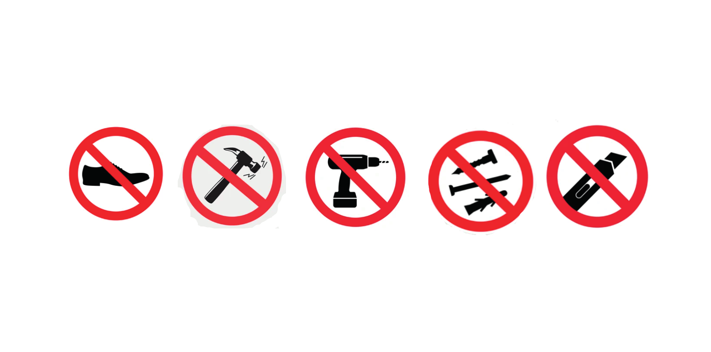

Isolamenti di edifici, isolamento di pareti, inter- ne ed esterne, tetti, pavimenti, balconi e terrazzi piani, sotti e garage, isolamento di facciate ventilate, strutture prefabbricate, portoni e serramenti, isolamenti di contenitori refrigerati e celle frigorifere, qualunque elemento in cui sia necessario raggiungere alti livelli di isolamento con minimo ingombro.
L’anima del pannello VacuNEXT (core) è realizzata in fibra di vetro, agugliato, pressato e disidratato a caldo; la fibra è totalmente inorganica con a base di SiO2 , CaO e Al2 O3 % senza additivi o collanti organici. Il materiale del nucleo è riciclabile al 100%. Il core viene insacchettato e posto sottovuoto mediante laminatrici a ciclo continuo e sottoposto a doppia termo sigillatura. L'incamiciatura è formata da una serie di pellicole in polietilene, nylon e alluminio che lo rendono impermeabile all'aria e al vapore. Il rivestimento esterno è costituito da tessuto in fibra di vetro, resistente agli strappi e alle forature e adatto all'incollaggio in parete con adesivi per cappotti termici a base cementizia o in poliuretano a bassa espansione. In condizione di normale utilizzo ed in assenza di danneggiamenti e forature, la vita utile del pannello VacuNEXT risulta superiore a 50 anni..
L'involucro di rivestimento del pannello Vacu- NEXT non potrà essere tagliato, forato, lacerato, chiodato o esposto ad alte temperature, liquidi o atmosfere aggressive che ne possano alterare lo stato sottovuoto necessaria al mantenimento delle caratteristiche isolanti. La conducibilità del pannello a pressione atmosferica è di 0,030 W/m2 K. Al fine di prevenire la posa di eventuali pannelli danneggiati, si dovrà eettuare una verifica visiva e sonora dei pannelli prima della loro messa in opera. Il pannello sottovuoto in condi- zioni normali risuona al pari di una lastra in gesso, in caso contrario sarà da scartare.
Le superfici su cui
verranno posati i pannelli
sottovuoto dovranno risultare prive di asperità,
spigoli e discontinuità di qualunque natura. La
superficie su cui verranno posati i pannelli
sottovuoto sia regolare, liscia, piana e non presenti spigoli o altre protuberanze taglienti che
potrebbero danneggiare il pannello in fase di
posa ed alterare lo stato di sottovuoto; sono da
evitarsi tassativamente tutte le possibili fonti di
concentrazione di tensione, gli sforzi flessionali
o torsionali.
attenzione dovrà essere riposta alle
fasi di movimentazione e stoccaggio dei pannelli sottovuoto per evitare che siano esposti
esposti ad alte temperature, elevata umidità e/o
gas aggressivi o alla pioggia; si dovrà porre
massima attenzione a non sovrapporre i bancali e a non sottoporre i pannelli ad alcun carico,
ad eccezione di carichi molto leggeri, privi di spigoli od altro che possa danneggiare l'involucro dei pannelli ed alterarne lo stato sottovuoto. In caso di posa in orizzontale si dovrà porre
la massima attenzione al calpestamento con
calzature idonee e con suole perfettamente
pulite e prive di punte o risalti che possano danneggiare i pannelli.